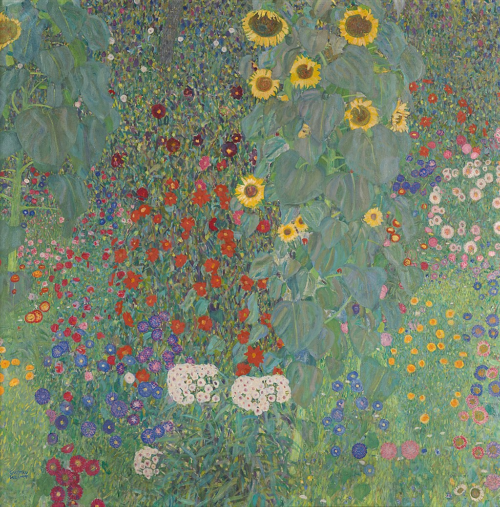

<head>
<meta charset="UTF-8" />
<meta name="keywords" content="drawing, painting" />
<meta name="description" content="drawings by Sunjy" />
<title>Sunjy</title>
<link rel="shortcut icon" type="image/x-icon" href="../../mImages/mCommon/favicon.ico" media="screen" />
<link rel="stylesheet" type="text/css" href="../../mCsses/mCommon/mCssA.css" />
<link rel="stylesheet" type="text/css" href="../../mCsses/mCommon/mCssB.css" />
<link rel="stylesheet" type="text/css" href="../../mCsses/mCommon/mCssC.css" />
<link rel="stylesheet" type="text/css" href="../../mCsses/mCommon/mCssD.css" />
<link rel="stylesheet" type="text/css" href="../../mCsses/mContent/mCssA.css" />
<link rel="stylesheet" type="text/css" href="../../mCsses/mContent/mCssB.css" />
<link rel="stylesheet" type="text/css" href="../../mCsses/mContent/mCssC.css" />
<link rel="stylesheet" type="text/css" href="../../mCsses/mContent/mCssD.css" />
</head>
<script type="text/javascript" src="../../mScripts/mContent/mContentAA.js" /></script>
<script type="text/javascript" src="../../mScripts/mContent/mContentAB.js" /></script>
<script type="text/javascript" src="../../mScripts/mContent/mContentAC.js" /></script>
<script type="text/javascript" src="../../mScripts/mContent/mContentAD.js" /></script>
<script type="text/javascript"></script> 
<script type="text/javascript">
document.write('<div class="mImgAbsolute"></div>');
/*
document.write('<p class="mFontSizeBColor" />From a white paper...</p>');
document.write('<table class="center"><tr><td>');
document.write('');
document.write('</td></tr></table>');
*/
</script>


<script type="text/javascript">
document.write('<p class="mFontSizeBColor" />Farm Garden with Sunflowers</p>');
document.write('<p class="mFontSizeSColor" />“Farm Garden with Sunflowers” by Gustav Klimt depicts a garden scene with a variety of flowers and sunflowers in a garden on a farm. Gustav Klimt was a Symbolist painter and one of the most prominent members of the Vienna Art Nouveau movement. <br><br>Beginning in the late 1890s, Klimt took annual summer holidays on the shores of Attersee and painted many of his landscapes there. These landscapes constitute the only genre aside from portrait painting that seriously interested Klimt.<br><br>In recognition of his interest in natural scenes, the locals called him Waldschrat (“forest demon”).<br><br>Klimt’s Landscapes paintings are of significant quality to merit appreciation. Formally, the landscapes are characterized by the same refinement of design and unique patterning as the figural pieces.<br><br>Space in his landscape works is flattened so efficiently that it is believed that Klimt used a telescope to paint to a single plane.<br><br>In “Farm Garden With Sunflowers,” Klimt presents an arrangement of brightly colored flowers in a bush background. Bushes of yellow sunflowers dominate the top of the painting.<br><br>White hydrangeas with soft red-toned centers feature at the center of the composition. Colorful carnations in shades of red, blue, and purple add to the color composition.<br></p>');
document.write('<table class="center" /><tr><td>');
document.write('<br>Beginning in the late 1890s, Klimt took annual summer holidays on the shores of Attersee and painted many of his landscapes there. These landscapes constitute the only genre aside from portrait painting that seriously interested Klimt.<br><br>In recognition of his interest in natural scenes, the locals called him Waldschrat (“forest demon”).<br><br>Klimt’s Landscapes paintings are of significant quality to merit appreciation. Formally, the landscapes are characterized by the same refinement of design and unique patterning as the figural pieces.<br><br>Space in his landscape works is flattened so efficiently that it is believed that Klimt used a telescope to paint to a single plane.<br><br>In “Farm Garden With Sunflowers,” Klimt presents an arrangement of brightly colored flowers in a bush background. Bushes of yellow sunflowers dominate the top of the painting.<br><br>White hydrangeas with soft red-toned centers feature at the center of the composition. Colorful carnations in shades of red, blue, and purple add to the color composition.<br>" />');
document.write('</td></tr></table>');
</script>


